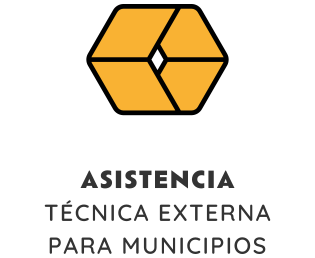
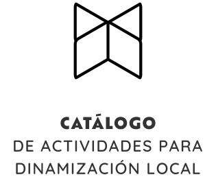
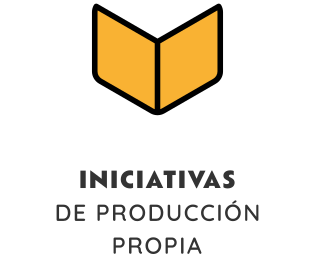
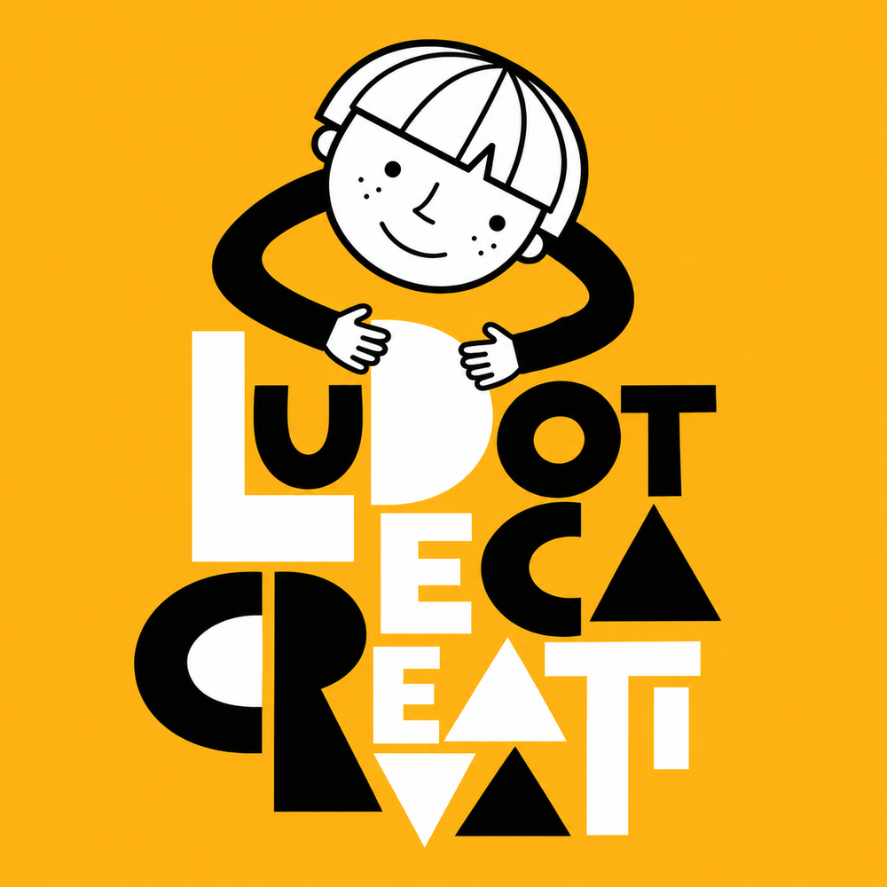

Novedad del catálogo
Para la programación municipal
Crear pequeñas aplicaciones con inteligencia artificial utilizando solo el teléfono móvil.
Desde 329 € IVA incluido

Ofrecemos asistencia técnica especializada, aliviando la carga municipal al gestionar todo el ciclo de un proyecto: desde el diseño y la ejecución hasta la memoria final con los indicadores requeridos por la administración.

Disponemos de actividades listas para su programación en fechas clave del municipio, pensadas para encajar en distintas líneas de trabajo, programas y convocatorias.

Desarrollamos proyectos propios ligados a la comarca de Los Pedroches. Iniciativas privadas abiertas al patrocinio o la colaboración para hacerlas crecer y llevarlas a nuevos contextos.
Podemos crear aplicaciones, webs y otras herramientas digitales con el objetivo de:
Novedad del catálogo
Para la programación municipal
Crear pequeñas aplicaciones con inteligencia artificial utilizando solo el teléfono móvil.
Desde 329 € IVA incluido
En funcionamiento
En nuestro centro cultural

Un espacio para dar rienda suelta a la creatividad de los más pequeños en el centro cultural de La Paralela.
Desde 25 € al mes IVA incluido
La Paralela · Ocio y Escuela
Al frente de La Paralela se encuentra Manolo Marín, Técnico Superior en Animación Sociocultural y licenciado en Arte Dramático, con más de veinte años de experiencia dinamizando la cultura en el entorno rural.
Conocer La ParalelaEl siguiente paso
Cuente con nosotros para sus proyectos socioculturales y olvídese de ellos hasta el día de la presentación.